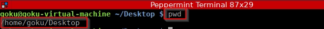

pwd - Print Working Directory (gives us our current location)

cd .. - to get one parent folder up (Change Directory)
ls - lists everything in the current folder
mkdir - to create new directory or folder
rmdir - to remove pr delete folders

cp x y - to copy x file to y place
rm x - to remove x file
mv x y - to move x to y place
locate bash - to locate a file
updatedb - to update the database
passwd - to change password of the user